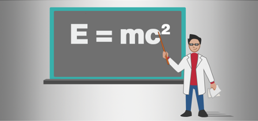

Bepu Physics

Warning
Bullet Physics is being phased out. We no longer plan to support or expand its features as our focus shifts to Bepu Physics. We recommend transitioning to Bepu Physics for access to the latest updates and ongoing improvements.
Stride simulates real-world physics such as gravity and collisions using "Bepu physics". This section explains how physics components work, how to add them to your project, and how to use them with scripts.
In this section
- Configuration: Setting up Bepu
- Simulation: Managing the simulations parameters
- Collidables: Physics objects in your game world
- Statics: Strong immovable objects such as terrain, walls, floors, or large rocks
- Bodies: Movable objects that can be knocked around, like cans, balls, or boxes
- Kinematic Bodies: Entities moved programmatically, such as moving platforms or doors
- Characters: Creatures moved programmatically, such as the player character, animals, or NPCs (non-player characters)
- Collider Shapes: Define the geometric shape of yours collidable components
- Triggers: Use triggers to detect passing objects
- Constraints: Join physics objects together, constrain them around points
- Physics queries: Operations to find objects in the scene
- Raycasts: Retrieving objects from casting a ray
- Sweepcasts: Retrieving objects from casting a shape
- Overlaps: Retrieving objects that are intersecting with a shape
- Physics Update: Updating logic alongside physics
Tutorials
- Physics tutorials
- Create a bouncing ball: Use the static collider and rigidbody components to create a ball bouncing on a floor
- Script a trigger: Create a trigger that doubles the size of a ball when the ball passes through it
Additional physics resources
- Stride integrates the open-source Bepu Physics engine.
- Explore the official Bepu website
- Watch demos on the Bepu YouTube
- For solutions on mitigating physics jitter, refer to our guide on Fixing Physics Jitter